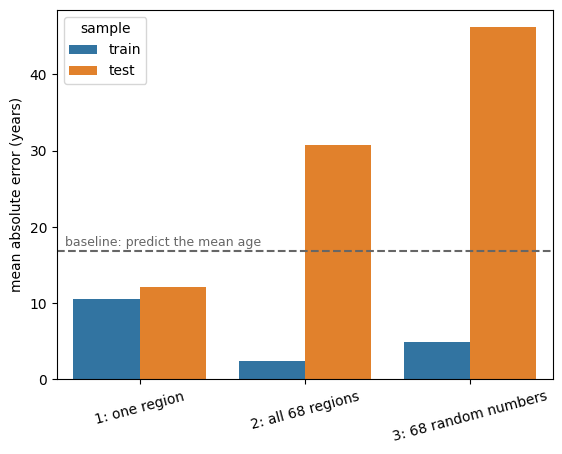
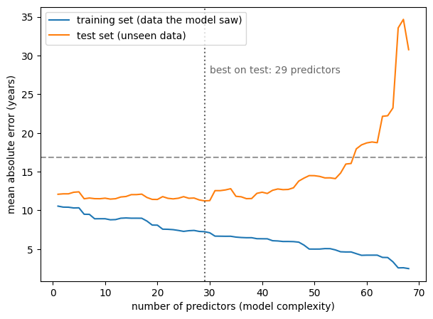

Training and Test Sets#
We ended chapter 2 with a problem: the error a model makes on the data it was fitted to can be driven to zero by adding predictors, whether or not those predictors mean anything. That number cannot be used to judge a model.
The way out is almost embarrassingly simple. If we want to know how well a model predicts data it has never seen, we should show it data it has never seen.
Setting up#
We take 160 participants and split them into two halves of 80: one for training, one for testing. Because mean age drifts substantially across the file (see chapter 1), the shuffle is what makes these two halves comparable — without it we would be testing on a systematically older group and calling the difference “overfitting”.
import numpy as np
import pandas as pd
import seaborn as sns
import matplotlib.pyplot as plt
from sklearn.linear_model import LinearRegression
from sklearn.metrics import mean_absolute_error
DATA_URL = "https://raw.githubusercontent.com/pni-lab/predmod_lecture/master/ex_data/IXI/ixi.csv"
ixi = pd.read_csv(DATA_URL).sample(frac=1, random_state=42).reset_index(drop=True)
TARGET = 'Age'
FEATURES = [c for c in ixi.columns if c.endswith('_volume')]
train = ixi.iloc[:80]
test = ixi.iloc[80:160]
print(f'train: n={len(train)}, mean age {train[TARGET].mean():.1f}')
print(f'test : n={len(test)}, mean age {test[TARGET].mean():.1f}')
train: n=80, mean age 47.6
test : n=80, mean age 48.2
Note
Scikit-learn is the standard package for “classical” machine
learning in python, with excellent documentation and a very active community. From here on it
does most of the work. Its LinearRegression is a minimal implementation, tuned for use inside
larger pipelines — it does not even give you p-values. We will not miss them.
Everything is measured against the same baseline as before: predicting the mean age of the training set for everybody.
baseline_prediction = train[TARGET].mean()
baseline_train = mean_absolute_error(train[TARGET], np.full(len(train), baseline_prediction))
baseline_test = mean_absolute_error(test[TARGET], np.full(len(test), baseline_prediction))
print(f'baseline MAE on train: {baseline_train:.2f} years')
print(f'baseline MAE on test : {baseline_test:.2f} years')
baseline MAE on train: 13.55 years
baseline MAE on test : 16.86 years
Three models#
Model 1 uses a single predictor, the volume of the right superior frontal cortex. Note that it is fitted on the training set only.
one_feature = ['rh_superiorfrontal_volume']
model_1 = LinearRegression().fit(X=train[one_feature], y=train[TARGET])
mae_1_train = mean_absolute_error(train[TARGET], model_1.predict(train[one_feature]))
print(f'model 1, MAE on train: {mae_1_train:.2f} years')
model 1, MAE on train: 10.55 years
Model 2 uses all 68 regions — the model that looked so impressive in chapter 2.
model_2 = LinearRegression().fit(X=train[FEATURES], y=train[TARGET])
mae_2_train = mean_absolute_error(train[TARGET], model_2.predict(train[FEATURES]))
print(f'model 2, MAE on train: {mae_2_train:.2f} years')
model 2, MAE on train: 2.48 years
Model 3 is our control: 68 random numbers per participant, guaranteed to know nothing about anybody’s age. We generate them for all 160 participants at once and split them the same way, so that the model can later be tested on random features it has not seen either.
rng = np.random.default_rng(seed=42)
noise = pd.DataFrame(rng.normal(size=(160, len(FEATURES))),
columns=[f'noise_{i}' for i in range(len(FEATURES))])
noise_train = noise.iloc[:80]
noise_test = noise.iloc[80:160]
model_3 = LinearRegression().fit(X=noise_train, y=train[TARGET])
mae_3_train = mean_absolute_error(train[TARGET], model_3.predict(noise_train))
print(f'model 3, MAE on train: {mae_3_train:.2f} years')
model 3, MAE on train: 4.97 years
The familiar picture: on the training data, the two complex models crush the simple one, and pure noise does about as well as real anatomy. Now for the moment of truth.
Testing on unseen data#
mae_1_test = mean_absolute_error(test[TARGET], model_1.predict(test[one_feature]))
mae_2_test = mean_absolute_error(test[TARGET], model_2.predict(test[FEATURES]))
mae_3_test = mean_absolute_error(test[TARGET], model_3.predict(noise_test))
results = pd.DataFrame({
'model': ['1: one region', '1: one region',
'2: all 68 regions', '2: all 68 regions',
'3: 68 random numbers', '3: 68 random numbers'],
'sample': ['train', 'test'] * 3,
'MAE': [mae_1_train, mae_1_test, mae_2_train, mae_2_test, mae_3_train, mae_3_test],
})
results.round(2)
| model | sample | MAE | |
|---|---|---|---|
| 0 | 1: one region | train | 10.55 |
| 1 | 1: one region | test | 12.09 |
| 2 | 2: all 68 regions | train | 2.48 |
| 3 | 2: all 68 regions | test | 30.77 |
| 4 | 3: 68 random numbers | train | 4.97 |
| 5 | 3: 68 random numbers | test | 46.14 |
ax = sns.barplot(x='model', y='MAE', hue='sample', data=results)
ax.axhline(baseline_test, ls='--', color='0.4')
ax.text(-0.45, baseline_test + 0.6, 'baseline: predict the mean age', color='0.4', fontsize=9)
plt.ylabel('mean absolute error (years)')
plt.xlabel('')
plt.xticks(rotation=15)
plt.show()

Read that figure slowly, because it contains most of the message of this book.
Model 1, the humble one-predictor model, does almost as well on the test set as on the training set. It learned something small and real, and that something transfers.
Model 2 was more than four times better than model 1 on the training data — and on the test data it is worse than predicting the mean age of everybody. All of its apparent superiority was memorization. Not merely useless: actively harmful.
Model 3, which by construction knows nothing, is catastrophic on the test set, missing by decades. Its training error was never a measure of knowledge at all.
The gap between the light and dark bars is the amount of overfitting. It is not a small correction; for model 2 it is the entire result.
The complexity curve#
Let’s watch this happen continuously rather than in three snapshots, by increasing the number of predictors one at a time and tracking the error on both samples.
# we keep looking at the same region first, so that the curve below starts from the model we have
# just fitted, and then adds the other 67 in a fixed order
ORDERED_FEATURES = ['rh_superiorfrontal_volume'] + [f for f in FEATURES if f != 'rh_superiorfrontal_volume']
n_features = range(1, len(FEATURES) + 1)
train_curve, test_curve = [], []
for k in n_features:
columns = ORDERED_FEATURES[:k]
model = LinearRegression().fit(X=train[columns], y=train[TARGET])
train_curve.append(mean_absolute_error(train[TARGET], model.predict(train[columns])))
test_curve.append(mean_absolute_error(test[TARGET], model.predict(test[columns])))
best_k = int(np.argmin(test_curve)) + 1
plt.figure(figsize=(7, 5))
sns.lineplot(x=list(n_features), y=train_curve, label='training set (data the model saw)')
sns.lineplot(x=list(n_features), y=test_curve, label='test set (unseen data)')
plt.axhline(baseline_test, ls='--', color='0.6')
plt.axvline(best_k, ls=':', color='0.4')
plt.text(best_k + 1, max(test_curve) * 0.8, f'best on test: {best_k} predictors', color='0.4')
plt.xlabel('number of predictors (model complexity)')
plt.ylabel('mean absolute error (years)')
plt.legend()
plt.show()
print(f'best test MAE {min(test_curve):.2f} years with {best_k} predictors '
f'(training MAE there: {train_curve[best_k - 1]:.2f})')

best test MAE 11.23 years with 29 predictors (training MAE there: 7.25)
This picture is worth committing to memory, because every method in the rest of the book is an attempt to find the bottom of that valley.
The training error (blue) falls essentially without limit: more complexity buys a better fit to the data at hand. The test error (orange) does something quite different. It hardly moves for the first handful of predictors — those regions are so correlated with the one we started from that they add almost nothing — then drifts down into a broad, bumpy valley around 25 to 30 predictors, and finally climbs steeply as the model starts fitting noise instead of anatomy. Beyond about 57 predictors it crosses the baseline for good, and the model is worse than useless.
Notice how flat and noisy the bottom of the valley is. The exact position of the minimum is not a meaningful quantity here: with 80 test participants, the difference between 20 and 30 predictors is well within the noise of the estimate. What the curve tells us reliably is the shape — a range of sensible complexities, with disaster on the right.
The two regimes have names. To the left of the minimum the model is underfitting: too rigid to use the information available. To the right it is overfitting: flexible enough to memorize. The minimum is the sweet spot, and its location depends on how much data you have and how much signal is in it — it cannot be known in advance, it has to be found empirically.
Note
This curve is the practical face of the bias-variance trade-off. A model that is too simple is wrong in a systematic way no matter how much data it sees (bias); a model that is too flexible gives wildly different answers depending on which particular sample it was trained on (variance). Prediction error contains both, and they move in opposite directions as complexity changes.
Exercise 3.1
Delete .sample(frac=1, random_state=42).reset_index(drop=True) from the loading cell — that is,
use the data in its original order — and re-run the notebook. What happens to the test errors and
to the baseline, and how would your interpretation of the figure change?
Solution
Every test error changes, and so does the baseline, because the unshuffled test set is on average about five and a half years older than the unshuffled training set. The overfitting gap for model 2 shrinks, which is not good news: two different effects are now mixed into one number, and they happen to partly cancel.
This is more than a technicality. When training and test data differ systematically — different scanner, different hospital, different decade — the test error stops being a measure of overfitting and becomes a measure of overfitting plus whatever else differs. Both are worth measuring, but not through the same number without knowing it. We return to this under the name dataset shift in chapter 6.
Exercise 3.2
The curve above has a clearly best number of predictors. Why can we not simply report that model and its test error as our result?
Solution
Because we chose it by looking at the test set. The moment the test data influences a decision about the model, it stops being unseen data, and the error we report for the winner is optimistic — we picked the luckiest point on a noisy curve. This is a form of leakage, and it is the subject of chapter 4 and chapter 5. Recognizing the problem here, before you have the machinery to solve it, is exactly the right order.
Doing the split properly
Splitting by position, as we did, is fine on shuffled data. In practice you would normally let scikit-learn do it, which also makes the randomness explicit and reproducible:
from sklearn.model_selection import train_test_split
train_auto, test_auto = train_test_split(ixi.iloc[:160], test_size=0.5, random_state=42)
print(f'train: n={len(train_auto)}, test: n={len(test_auto)}')
train: n=80, test: n=80
See also
For a classification problem, use stratify= so that both halves contain a comparable proportion
of each class. For data with group structure — several scans per person, several sites — a plain
random split will put related observations on both sides and quietly inflate your performance;
scikit-learn’s GroupShuffleSplit
handles that case.
The cost of a test set#
Holding out data for testing is the most direct way to get an honest performance estimate, and when the held-out data is genuinely new — a different hospital, a later cohort — it is the strongest evidence a predictive model can have.
But it is expensive. We just spent 80 participants to learn one number, and those 80 participants were unavailable for training the model that number describes. In biomedical research, where each participant costs real money and real effort, this stings.
The next page shows how cross-validation lets us have it both ways.